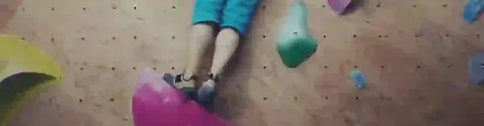
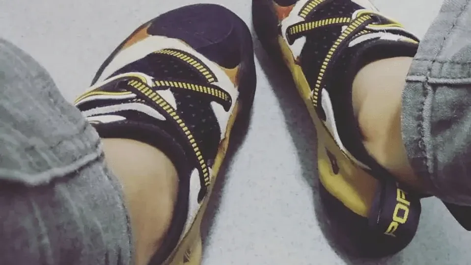

Daily Life | クライミングが教えてくれたこと

小学生の作文みたいなこのタイトルでいくことにしました！ その過程と、感じたことを記録しておきます。
初めては2017年3月（か4月）、仕事仲間のLさんに誘われてのことでした。
ボルダリングをスポーツとして見ると、同じ動きの繰り返し（ランニングのような）ではなく、変化に富んでいて、ひとりでもできて（パートナーが要らない）、私の好みにぴったりでした。急に、運動をまったくしなかった私に、「運動」という趣味ができたのです。
7月から、初級のテクニック講習に通い始めて、週に2〜3回登っていました。
10月に、別の理由でけがをして休み、ボルダリングの予定は、病院通いに変わってしまいました。鍛えた力も、怠けているうちに、過ぎ去った雲のように消えました。
12月にトップロープのビレイを習い、2018年1月にビレイの認定証をもらったあとは、忙しすぎて、6月まで月に1回ほどしか登れませんでした。（幸い、車の免許に比べれば、ビレイの認定証は、ただの紙くずになりにくいです）
しばらく登り続けては、しばらく休んで元に戻る。その繰り返しで、「ダメ人間」というラベルのシールが心に強く貼りつけられて、つらくて仕方なく、でも逃げられませんでした。貼ったのは自分だからです。そのサイクルのたびに、私はいちど崩れて、Lさんは根気よく言いました。「クライミングって、こういうものだよ」。
そう、人生もです。
自問自答：「何が不満なの？」「何もない。（割りきれない）全部、私の問題」

2018年8月、シューズ慣らし。痛いけど楽しい。
2018年7月、また登り始めました。今度は、けがをしないように慎重に、そして、週に最低1回は登る頻度を保つように注意しながら。
生活や気持ちの大きな浮き沈みも、この頻度の実践には影響せず（……膝や足首、手首のけがも）、2019年の今まで続いています。
実は、クライミングは比較的公平なものです。ひとつのルートを前にして、ゴールにたどり着けば（完登すれば）、使ってはいけない方法はありません。これは、人それぞれ体の条件が違うことの表れでもあるので、方法が違っても、正しい間違いはなく、誰も、あなたの体を批判しません。ルートによって、背が高いことは、利点になることも、欠点になることもあるからです。
クライミングは、自分に正直に向き合うことを教えてくれました。体の条件はこう、いまの段階の能力はこう、自分の恐怖はこう。他人にできたからといって、自分にもできるとは限りません。評価せず、正直にならなければ、けがをするだけです。
そして恐怖については、逃げずに、その存在をまっすぐ見ることも学んでいます。落ちるのが怖い、高いところが怖い、けがが怖い、痛いのが怖い……。あるいは、ときどき逃げることもあるけれど、怖がっているものの正体と、自分の弱点は何かを見極めて、克服する方法を探して、次にまた出会ったときに、勇気を出して一度挑戦してみる。（恐怖は、人と比べてはいけません。比べられないものです）
クライミングは、自分の性格のどこを直さなければならないかをいつも数えないこと（性格は、体と同じで、良し悪し、正しい間違いはなく、表と裏です）、自分のミスや不完全さをいつも責めないこと（誰も完璧ではありません）、他人の基準の中で生きないこと（「あなたに向いてる／あなたならできる／あなたじゃなきゃ」と言われたからといって、全力で達成しようとしないこと）を思い出させてくれます。自分に正直に、「本当に好き？ 本当に欲しい？」と問いかけて、はっきりしたら、時間、資源、健康などでしっかり見積もって、実現可能な基準線を引き、根拠のない高い基準で自分に求めることを避けるのです。
そして、失敗は恥ずかしいことではないし、誰もあなたの失敗を気にしていません。安心して試していいし、万全の準備ができてから動く必要もありません。自分が耐えられないほどの傷を負わないことだけ、確認すればいいのです。（けがについては、いつも「交換」を思い出します。生きることは、絶えず交換すること。けがをするリスクを冒して、試す機会や経験と引き換えにするのです）
クライミングの過程は、私の不安のほとんどが、実は自分で自分を閉じこめていることから来ているのだと映し出しています。高すぎる基準を決めて、いつも他人の期待に応えようとして、自分を休ませず、けがをしたまま問題に向き合い、悪循環。